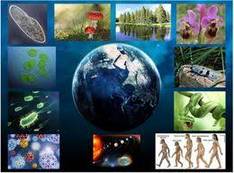

- Ciencias físicas
Las ciencias físicas es la rama de las ciencias naturales que estudia los sistemas no vivos, en contraste con las ciencias de la vida. A su vez tiene muchas ramas, cada una referida a una ciencia específica, como por ejemplo la física,química, astronomía o geología. El término «física» crea una distinción innecesaria, pues muchas ramas de la ciencia física también estudian fenómenos biológicos y las ramas de la química como la química orgánica. Otra definición de ciencias físicas es la siguiente: un trabajo sistemático que construye y organiza el conocimiento en forma de explicaciones comprobables y predicciones sobre el universo.
- Ciencias de la vida
Las ciencias de la Tierra son un conjunto de disciplinas cuyo objetivo es el estudio del planeta Tierra, incluidas su interacción con el resto del universo y la evolución de los seres vivos que habitan en él. Esta disciplina abarca diversas áreas del conocimiento, tales como: las geociencias, las ciencias atmosféricas, las ciencias marinas, las ciencias ambientales, las ciencias criosféricas, la limnología, las ciencias forestales, la ciencia del suelo, la geografía física, la paleontología, la ecología del paisaje y las ciencias planetarias.
- Ciencias de la vida
Las ciencias de la vida (también, biociencias) comprenden todos los campos de la ciencia que estudian los seres vivos, como las plantas, animales y seres humanos. Aunque el estudio del comportamiento de los organismos, tal como se practica en etología, psicología y biología, incluye también otros campos relacionados como la medicina, la biomedicina y la bioquímica, el espectro metodológico puede abarcar todos los dispositivos y aparatos relacionados e incluir también ciencias humanas y sociales. Ha llevado a una proliferación de especializaciones y campos interdisciplinarios.
Si bien la biología, la medicina y la química siguen siendo centros de ciencias de la vida, los avances tecnológicos en biología molecular y la biotecnología han dado lugar a un florecimiento de las especialidades y campos nuevos, a menudo interdisciplinarios.
Las ciencias de la vida son útiles para mejorar la calidad y el nivel de vida. Tienen aplicaciones en la agricultura, la ciencia de los alimentos, las industrias farmacéuticas, la medicina y la salud.
En el mundo anglosajón, se utiliza a menudo el término life sciences ("ciencias de la vida"). No siempre se utiliza en todos los países con las mismas connotaciones o con el mismo grado de abarcabilidad (contexto).
